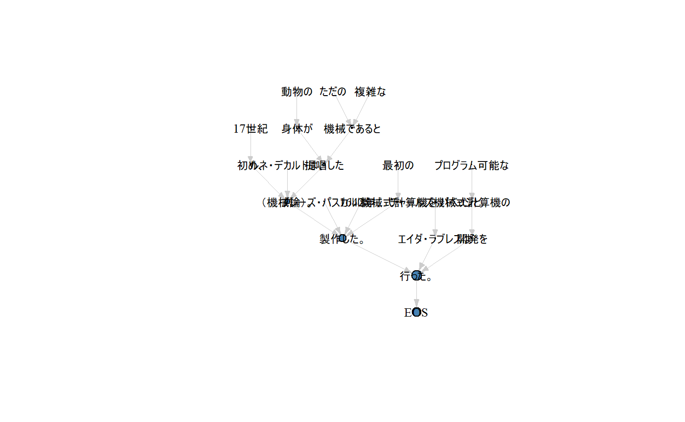

vignettes/03_100-knocks-2020.Rmd
03_100-knocks-2020.Rmd言語処理100本ノック 2020 (Rev 1)のうち、第5章: 係り受け解析の回答例。
Morphクラスを実装してそれを拡張しながら解き進めていくつくりになっている。一方で、この記事ではTidyverse的なデータフレームの操作に注力し、クラスを実装せずに回答をつくっている。2015年版については以下の例がRで取り組んでいる。
2020年版ではPythonで解いている記事はすでにたくさんある。Rで部分的に取り組んでいる例もあるが、とくに8章のディープ・ニューラルネットのあたりから現状のRを取り巻く環境では取り組みにくい課題になるためか、完走している例はまだ見つけられない。
83文ある（各文は複文なので本当はパラグラフというほうが正しい）。
temp <- tempfile(fileext = ".zip")
download.file("https://nlp100.github.io/data/ai.ja.zip", temp)
temp <- unzip(temp, exdir = tempdir())
ai_ja <- readtext::readtext(temp[1], encoding = "UTF-8")
ai_ja$text[1] %>%
readr::read_lines(skip_empty_rows = TRUE) %>%
length()
#> [1] 83base::iconv()は変換先にない文字が含まれるとNA_character_が返ってくるが、これをそのままにして解析するとpipian::CabochaR()$as_tibble()したときに結果をパースできなくなるため、CP932にない文字列が含まれる文はあらかじめ除去する必要がある。
なお、vignetteのビルドに時間がかかりすぎると開発の都合上不便なため、以下では20文だけ抽出して解析している。
res <- ai_ja %>%
dplyr::pull(text) %>%
readr::read_lines(skip_empty_rows = TRUE)
res <- res %>%
sample(20L) %>%
iconv(from = "UTF-8", to = "CP932") %>%
purrr::discard(~ is.na(.)) %>%
pipian::cabochaFlatXML()
res <- pipian::CabochaR(res)$as_tibble()
head(res)
#> # A tibble: 6 x 20
#> sentence_idx chunk_idx D1 D2 rel score head func tok_idx ne_value
#> <int> <dbl> <chr> <chr> <chr> <chr> <chr> <chr> <dbl> <chr>
#> 1 1 3 0 1 D 1.78~ 1 2 0 O
#> 2 1 3 0 1 D 1.78~ 1 2 1 O
#> 3 1 3 0 1 D 1.78~ 1 2 2 O
#> 4 1 7 1 5 D 1.95~ 3 4 3 O
#> 5 1 7 1 5 D 1.95~ 3 4 4 O
#> 6 1 7 1 5 D 1.95~ 3 4 5 O
#> # ... with 10 more variables: word <chr>, POS1 <chr>, POS2 <chr>, POS3 <chr>,
#> # POS4 <chr>, X5StageUse1 <chr>, X5StageUse2 <chr>, Original <chr>,
#> # Yomi1 <chr>, Yomi2 <chr>冒頭の説明文の形態素列
res %>%
dplyr::filter(sentence_idx == 1) %>%
dplyr::pull(word) %>%
stringr::str_c(collapse = " ")
#> [1] "主要 国 の 軍隊 は 、 ミサイル 防衛 の 分野 で の 自動 化 を 試み て いる 。 アメリカ 海軍 は 完全 自動 の 防空 システム 「 」 を 導入 し 砲 により 対 艦 ミサイル を 破壊 できる 。 イスラエル 軍 は 対空 迎撃 ミサイル システム 「 」 を 所有 し 、 ガザ 地区 と の 境界 線 に は 標的 を 自動 検知 する や サムソン を 稼働 さ せ て 複数 の 人間 を 射殺 し て いる 。 今後 は 新しい 軍事 能力 を 生み 、 軍 の 指揮 、 訓練 、 部隊 の 展開 を 変え 、 戦争 を 一変 さ せ その 変化 は 大国 間 の 軍事 バランス を 決める こと に なる と の 主張 も ある 。 哨戒 機 の よう に 戦闘 指揮 システム に 支援 用 に 搭載 さ れる こと も ある 。"memo <- res %>%
dplyr::filter(POS1 != "記号") %>%
dplyr::group_by(sentence_idx, chunk_idx) %>%
dplyr::mutate(
chunk = stringr::str_c(
word,
collapse = ""
)
) %>%
dplyr::ungroup() %>%
dplyr::select(sentence_idx, chunk_idx, D1, D2, chunk) %>%
dplyr::distinct()
memo %>%
dplyr::filter(D2 != -1) %>%
dplyr::group_by(sentence_idx, chunk_idx, D1) %>%
dplyr::mutate(collocation = stringr::str_c(
chunk,
memo$chunk[memo$sentence_idx == .data$sentence_idx & memo$D1 == .data$D2],
sep = " "
)) %>%
dplyr::ungroup() %>%
dplyr::select(chunk, collocation) %>%
head()
#> # A tibble: 6 x 2
#> chunk collocation
#> <chr> <chr>
#> 1 主要国の 主要国の 軍隊は
#> 2 軍隊は 軍隊は 試みている
#> 3 ミサイル防衛の ミサイル防衛の 分野での
#> 4 分野での 分野での 自動化を
#> 5 自動化を 自動化を 試みている
#> 6 試みている 試みている 破壊できるmemo <- res %>%
dplyr::group_by(sentence_idx, chunk_idx) %>%
dplyr::mutate(
chunk = stringr::str_c(
word,
collapse = ""
)
) %>%
dplyr::ungroup() %>%
dplyr::mutate(tag = POS1 == "動詞") %>%
dplyr::select(sentence_idx, chunk_idx, D1, D2, chunk, POS1, tag) %>%
dplyr::distinct()
memo %>%
dplyr::filter(POS1 == "名詞") %>%
dplyr::filter(D2 != -1) %>%
dplyr::group_by(sentence_idx, chunk_idx, D1) %>%
dplyr::mutate(collocation = stringr::str_c(
chunk,
memo$chunk[memo$sentence_idx == .data$sentence_idx & memo$D1 == .data$D2 & memo$tag == TRUE],
sep = " "
)) %>%
dplyr::ungroup() %>%
dplyr::select(chunk, collocation) %>%
dplyr::filter(chunk != collocation) %>%
head()
#> # A tibble: 6 x 2
#> chunk collocation
#> <chr> <chr>
#> 1 軍隊は、 軍隊は、 試みている。
#> 2 自動化を 自動化を 試みている。
#> 3 アメリカ海軍は アメリカ海軍は 破壊できる。
#> 4 導入し 導入し 破壊できる。
#> 5 砲により 砲により 破壊できる。
#> 6 対艦ミサイルを 対艦ミサイルを 破壊できる。graph <- ai_ja$text[1] %>%
readr::read_lines(skip_empty_rows = TRUE)
tbl <- graph[12] %>%
iconv(from = "UTF-8", to = "CP932") %>%
purrr::discard(~ is.na(.)) %>%
pipian::CabochaTbl()
tbl$plot()
memo <- res %>%
dplyr::select(sentence_idx, chunk_idx, D1, D2, POS1, Original)
pattern <- memo %>%
dplyr::filter(POS1 == "動詞") %>%
dplyr::group_by(sentence_idx, chunk_idx, D1) %>%
dplyr::group_map(~ .x %>%
dplyr::mutate(collocation = stringr::str_c(
"",
memo$Original[memo$sentence_idx == .y$sentence_idx & memo$D2 == .y$D1 & memo$POS1 == "助詞"],
collapse = " "
))) %>%
purrr::map_dfr(~.) %>%
dplyr::select(Original, collocation)
pattern
#> # A tibble: 274 x 2
#> Original collocation
#> <chr> <chr>
#> 1 試みる は を
#> 2 いる は を
#> 3 する を
#> 4 できる て は により を
#> 5 する は を
#> 6 する を
#> 7 する を
#> 8 せる を
#> 9 する に は て を
#> 10 いる に は て を
#> # ... with 264 more rows「行う」「なる」「与える」という動詞の格パターン
pattern %>%
dplyr::filter(Original %in% c("行う", "なる", "与える")) %>%
dplyr::group_by(Original, collocation) %>%
dplyr::count()
#> # A tibble: 18 x 3
#> # Groups: Original, collocation [18]
#> Original collocation n
#> <chr> <chr> <int>
#> 1 なる が と 2
#> 2 なる で が に 1
#> 3 なる て で から で も が 1
#> 4 なる て は として に 1
#> 5 なる と 1
#> 6 なる に 1
#> 7 なる に は によって 1
#> 8 なる に は も 1
#> 9 なる は て 1
#> 10 なる は に 1
#> 11 なる は は 1
#> 12 行う で は が 1
#> 13 行う に で を 1
#> 14 行う まで を に 1
#> 15 行う を 2
#> 16 行う を に を 1
#> 17 与える が など に 1
#> 18 与える が に 1memo <- res %>%
dplyr::group_by(sentence_idx, chunk_idx) %>%
dplyr::mutate(
chunk = stringr::str_c(
word,
collapse = ""
)
) %>%
dplyr::ungroup() %>%
dplyr::select(sentence_idx, chunk_idx, D1, D2, POS1, Original, chunk)
pattern <- memo %>%
dplyr::filter(POS1 == "動詞") %>%
dplyr::group_by(sentence_idx, chunk_idx, D1) %>%
dplyr::group_map(~ .x %>%
dplyr::mutate(collocation = stringr::str_c(
"",
memo$Original[memo$sentence_idx == .y$sentence_idx & memo$D2 == .y$D1 & memo$POS1 == "助詞"],
collapse = " "
)) %>%
dplyr::mutate(chunk = stringr::str_c(
"",
memo$chunk[memo$sentence_idx == .y$sentence_idx & memo$D2 == .y$D1 & memo$POS1 == "助詞"],
collapse = " "
))) %>%
purrr::map_dfr(~.) %>%
dplyr::select(Original, collocation, chunk)
pattern
#> # A tibble: 274 x 3
#> Original collocation chunk
#> <chr> <chr> <chr>
#> 1 試みる は を 軍隊は、 自動化を
#> 2 いる は を 軍隊は、 自動化を
#> 3 する を 「」を
#> 4 できる て は により を 試みている。 アメリカ海軍は 砲により 対艦ミサイルを
#> 5 する は を イスラエル軍は 「」を
#> 6 する を 標的を
#> 7 する を サムソンを
#> 8 せる を サムソンを
#> 9 する に は て を 境界線には 境界線には 稼働させて 人間を
#> 10 いる に は て を 境界線には 境界線には 稼働させて 人間を
#> # ... with 264 more rows「サ変接続名詞 + を -> 動詞」ではなく、サ変接続名詞が含まれる文節すべてについてマイニングしている。
memo <- res %>%
dplyr::group_by(sentence_idx, chunk_idx) %>%
dplyr::mutate(
chunk = stringr::str_c(
word,
collapse = ""
)
) %>%
dplyr::ungroup() %>%
dplyr::select(sentence_idx, chunk_idx, D1, D2, POS1, POS2, Original, chunk)
pattern <- memo %>%
dplyr::filter(POS2 == "サ変接続") %>%
dplyr::group_by(sentence_idx, chunk_idx) %>%
dplyr::mutate(surface_form = stringr::str_c(
chunk,
collapse = ""
)) %>%
dplyr::ungroup() %>%
dplyr::group_by(sentence_idx, chunk_idx, D1) %>%
dplyr::group_map(~ .x %>%
dplyr::mutate(collocation = stringr::str_c(
"",
memo$Original[memo$sentence_idx == .y$sentence_idx & memo$D2 == .y$D1 & memo$POS1 == "助詞"],
collapse = " "
)) %>%
dplyr::mutate(chunk = stringr::str_c(
"",
memo$chunk[memo$sentence_idx == .y$sentence_idx & memo$D2 == .y$D1 & memo$POS1 == "助詞"],
collapse = " "
))) %>%
purrr::map_dfr(~.) %>%
dplyr::select(surface_form, collocation, chunk)
pattern
#> # A tibble: 238 x 3
#> surface_form collocation chunk
#> <chr> <chr> <chr>
#> 1 ミサイル防衛の "" ""
#> 2 導入し "を" "「」を"
#> 3 破壊できる。 "て は により を"~ "試みている。 アメリカ海軍は 砲により 対艦ミサイルを"~
#> 4 対空迎撃ミサイルシステム~ "" ""
#> 5 所有し、 "は を" "イスラエル軍は 「」を"
#> 6 自動検知する "を" "標的を"
#> 7 稼働させて "を" "サムソンを"
#> 8 射殺している。 "に は て を" "境界線には 境界線には 稼働させて 人間を"~
#> 9 指揮、 "の" "軍の"
#> 10 訓練、 "" ""
#> # ... with 228 more rowsmemo <- res %>%
dplyr::mutate_at(c("D1", "D2"), as.integer) %>%
dplyr::group_by(sentence_idx, chunk_idx) %>%
dplyr::mutate(
chunk = stringr::str_c(
word,
collapse = ""
)
) %>%
dplyr::ungroup() %>%
dplyr::select(sentence_idx, chunk_idx, D1, D2, POS1, Original, chunk) %>%
dplyr::distinct(chunk, .keep_all = TRUE)
pattern <- memo %>%
dplyr::filter(POS1 == "名詞") %>%
dplyr::group_by(sentence_idx, chunk_idx) %>%
dplyr::group_map(~ .x %>%
dplyr::mutate(
sentence_idx = .y$sentence_idx,
chunk_idx = .y$chunk_idx,
path = stringr::str_c(
memo$chunk[
memo$sentence_idx == .y$sentence_idx &
memo$chunk_idx >= .y$chunk_idx &
(memo$D2 > .x$D1 || memo$D2 == -1L)
],
sep = "",
collapse = " -> "
)
)) %>%
purrr::map_dfr(~.)
pattern %>%
dplyr::select(path) %>%
dplyr::filter(path != "")
#> # A tibble: 18 x 1
#> path
#> <chr>
#> 1 主要国の -> 軍隊は、 -> ミサイル防衛の -> 分野での -> 自動化を -> 試みている。 -> アメリカ海軍は -> 完全自動の -> 防空シ~
#> 2 脳シミュレーションを -> 行うには -> 脳神経科学の -> 知識も -> 重要となる。
#> 3 年には -> 国立情報学研究所や -> 富士通研究所の -> 研究チームが -> 開発した -> 「東くん」で -> 東京大学入試の -> 模擬試験に ~
#> 4 プログラミング言語による -> 「」という -> カウンセラーを -> 模倣した -> プログラム -> （人工無脳）が -> しばしば -> 引き合い~
#> 5 フランス大統領は -> 分野の -> 開発支援に -> 向け -> 年で -> 億ドル -> （約億円）を -> 支出すると -> 宣言し、 -> 研究~
#> 6 年 -> 月に -> 米社が -> 作成した -> プロ囲碁棋士に -> 勝利して以降は -> と -> 手法が -> 注目され、 -> 人工知能自体の~
#> 7 アメリカでは -> 年に -> 時の -> 大統領が -> 脳研究プロジェクト -> 発表。
#> 8 ニューロ， -> ファジィ， -> という -> 手法は、 -> 単純な -> 制御や、 -> 対象を -> 数式で -> 客観的に -> モデル化する~
#> 9 生命情報科学者・神経科学者の -> 合原一幸編著 -> 『人工知能は -> こうして -> 創られる』に -> よれば、 -> 急激な -> 発展に -~
#> 10 人工知能
#> 11 年の -> 発明と、 -> 年以降の -> ビッグデータ収集環境の -> 整備、 -> 計算資源と -> 高性能化により、 -> が -> 画像処理コン~
#> 12 これらを -> 統合した -> 知的システムを -> 作る -> 試みも -> なされている。 -> では、 -> エキスパートの -> 推論ルールを、~
#> 13 ロシアと -> 既に -> 実用化してると -> される -> ハッキングの -> 自動化の -> 他、 -> 個人を -> 攻撃したり -> で ->~
#> 14 発明家レイ・カーツワイルが -> 言うには、 -> 哲学者ジョン・が -> 提起した -> 強い -> 弱い -> 論争は、 -> 哲学議論で -> ホ~
#> 15 ロボット向けとしては、 -> 提唱した -> 包摂アーキテクチャという -> 登場している。 -> これは -> 従来型の -> 「我思う、 -> 故に~
#> 16 年代に -> なると -> に関して -> 活発な -> 成果が -> 出始めた。 -> ジョン・マッカーシーは -> に関する -> 最初の -> 会~
#> 17 リーズナブルな -> コストで -> 大量の -> 計算リソースが -> 手に -> 入るようになった -> ビッグデータが -> 出現し、 -> 企業~
#> 18 年代に、 -> によって -> 広く -> 使われるようになった。sessioninfo::session_info()
#> - Session info ---------------------------------------------------------------
#> setting value
#> version R version 4.0.3 (2020-10-10)
#> os Windows 10 x64
#> system x86_64, mingw32
#> ui RTerm
#> language (EN)
#> collate Japanese_Japan.932
#> ctype Japanese_Japan.932
#> tz Asia/Tokyo
#> date 2020-11-02
#>
#> - Packages -------------------------------------------------------------------
#> package * version date lib source
#> assertthat 0.2.1 2019-03-21 [1] CRAN (R 4.0.2)
#> backports 1.1.10 2020-09-15 [1] CRAN (R 4.0.2)
#> blob 1.2.1 2020-01-20 [1] CRAN (R 4.0.2)
#> broom 0.7.2 2020-10-20 [1] CRAN (R 4.0.3)
#> cellranger 1.1.0 2016-07-27 [1] CRAN (R 4.0.2)
#> cli 2.1.0 2020-10-12 [1] CRAN (R 4.0.3)
#> colorspace 1.4-1 2019-03-18 [1] CRAN (R 4.0.2)
#> crayon 1.3.4 2017-09-16 [1] CRAN (R 4.0.2)
#> data.table 1.13.2 2020-10-19 [1] CRAN (R 4.0.3)
#> DBI 1.1.0 2019-12-15 [1] CRAN (R 4.0.2)
#> dbplyr 1.4.4 2020-05-27 [1] CRAN (R 4.0.2)
#> desc 1.2.0 2018-05-01 [1] CRAN (R 4.0.2)
#> digest 0.6.27 2020-10-24 [1] CRAN (R 4.0.3)
#> dplyr * 1.0.2 2020-08-18 [1] CRAN (R 4.0.2)
#> ellipsis 0.3.1 2020-05-15 [1] CRAN (R 4.0.2)
#> evaluate 0.14 2019-05-28 [1] CRAN (R 4.0.2)
#> fansi 0.4.1 2020-01-08 [1] CRAN (R 4.0.2)
#> flatxml 0.1.0 2020-07-24 [1] CRAN (R 4.0.2)
#> forcats * 0.5.0 2020-03-01 [1] CRAN (R 4.0.2)
#> fs 1.5.0 2020-07-31 [1] CRAN (R 4.0.2)
#> generics 0.1.0 2020-10-31 [1] CRAN (R 4.0.3)
#> ggplot2 * 3.3.2 2020-06-19 [1] CRAN (R 4.0.2)
#> glue 1.4.2 2020-08-27 [1] CRAN (R 4.0.2)
#> gtable 0.3.0 2019-03-25 [1] CRAN (R 4.0.2)
#> haven 2.3.1 2020-06-01 [1] CRAN (R 4.0.2)
#> hms 0.5.3 2020-01-08 [1] CRAN (R 4.0.2)
#> htmltools 0.5.0 2020-06-16 [1] CRAN (R 4.0.2)
#> httr 1.4.2 2020-07-20 [1] CRAN (R 4.0.2)
#> igraph 1.2.6 2020-10-06 [1] CRAN (R 4.0.3)
#> jsonlite 1.7.1 2020-09-07 [1] CRAN (R 4.0.2)
#> knitr 1.30 2020-09-22 [1] CRAN (R 4.0.2)
#> lifecycle 0.2.0 2020-03-06 [1] CRAN (R 4.0.2)
#> lubridate 1.7.9 2020-06-08 [1] CRAN (R 4.0.2)
#> magrittr 1.5 2014-11-22 [1] CRAN (R 4.0.2)
#> MASS 7.3-53 2020-09-09 [2] CRAN (R 4.0.3)
#> memoise 1.1.0 2017-04-21 [1] CRAN (R 4.0.2)
#> modelr 0.1.8 2020-05-19 [1] CRAN (R 4.0.2)
#> munsell 0.5.0 2018-06-12 [1] CRAN (R 4.0.2)
#> pillar 1.4.6 2020-07-10 [1] CRAN (R 4.0.2)
#> pipian * 0.2.3-1 2020-11-02 [1] local
#> pkgconfig 2.0.3 2019-09-22 [1] CRAN (R 4.0.2)
#> pkgdown 1.4.1 2020-09-23 [1] Github (r-lib/pkgdown@cdd8340)
#> ps 1.4.0 2020-10-07 [1] CRAN (R 4.0.3)
#> purrr * 0.3.4 2020-04-17 [1] CRAN (R 4.0.2)
#> R.cache 0.14.0 2019-12-06 [1] CRAN (R 4.0.2)
#> R.methodsS3 1.8.1 2020-08-26 [1] CRAN (R 4.0.2)
#> R.oo 1.24.0 2020-08-26 [1] CRAN (R 4.0.2)
#> R.utils 2.10.1 2020-08-26 [1] CRAN (R 4.0.2)
#> R6 2.5.0 2020-10-28 [1] CRAN (R 4.0.3)
#> Rcpp 1.0.5 2020-07-06 [1] CRAN (R 4.0.2)
#> readr * 1.4.0 2020-10-05 [1] CRAN (R 4.0.3)
#> readtext * 0.80 2020-09-22 [1] CRAN (R 4.0.2)
#> readxl 1.3.1 2019-03-13 [1] CRAN (R 4.0.2)
#> reprex 0.3.0 2019-05-16 [1] CRAN (R 4.0.2)
#> rlang 0.4.8 2020-10-08 [1] CRAN (R 4.0.3)
#> rmarkdown 2.5 2020-10-21 [1] CRAN (R 4.0.2)
#> rprojroot 1.3-2 2018-01-03 [1] CRAN (R 4.0.2)
#> rstudioapi 0.11 2020-02-07 [1] CRAN (R 4.0.2)
#> rvest 0.3.6 2020-07-25 [1] CRAN (R 4.0.2)
#> scales 1.1.1 2020-05-11 [1] CRAN (R 4.0.2)
#> sessioninfo 1.1.1 2018-11-05 [1] CRAN (R 4.0.2)
#> stringi 1.5.3 2020-09-09 [1] CRAN (R 4.0.2)
#> stringr * 1.4.0 2019-02-10 [1] CRAN (R 4.0.2)
#> styler 1.3.2 2020-02-23 [1] CRAN (R 4.0.2)
#> tibble * 3.0.4 2020-10-12 [1] CRAN (R 4.0.3)
#> tidyr * 1.1.2 2020-08-27 [1] CRAN (R 4.0.2)
#> tidyselect 1.1.0 2020-05-11 [1] CRAN (R 4.0.2)
#> tidyverse * 1.3.0 2019-11-21 [1] CRAN (R 4.0.2)
#> utf8 1.1.4 2018-05-24 [1] CRAN (R 4.0.2)
#> vctrs 0.3.4 2020-08-29 [1] CRAN (R 4.0.2)
#> withr 2.3.0 2020-09-22 [1] CRAN (R 4.0.2)
#> xfun 0.19 2020-10-30 [1] CRAN (R 4.0.3)
#> xml2 1.3.2 2020-04-23 [1] CRAN (R 4.0.2)
#> yaml 2.2.1 2020-02-01 [1] CRAN (R 4.0.0)
#>
#> [1] C:/Users/user/Documents/R/win-library/4.0
#> [2] C:/Program Files/R/R-4.0.3/library